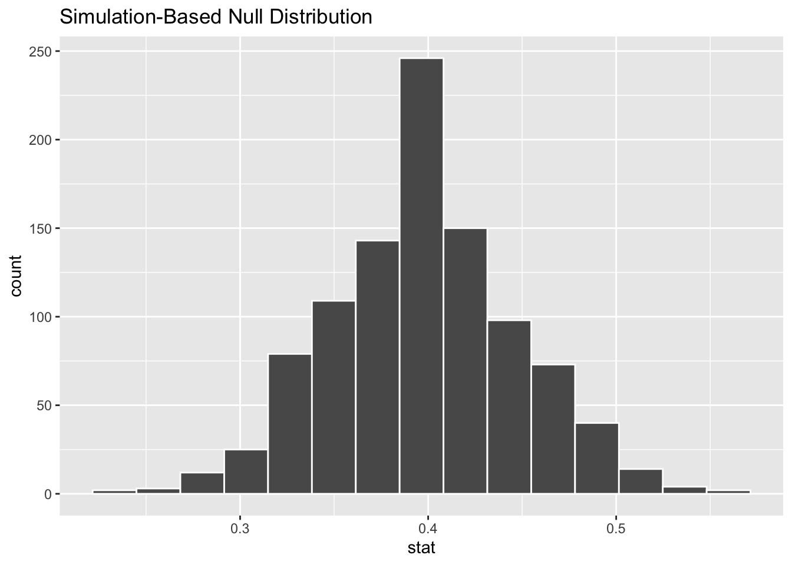
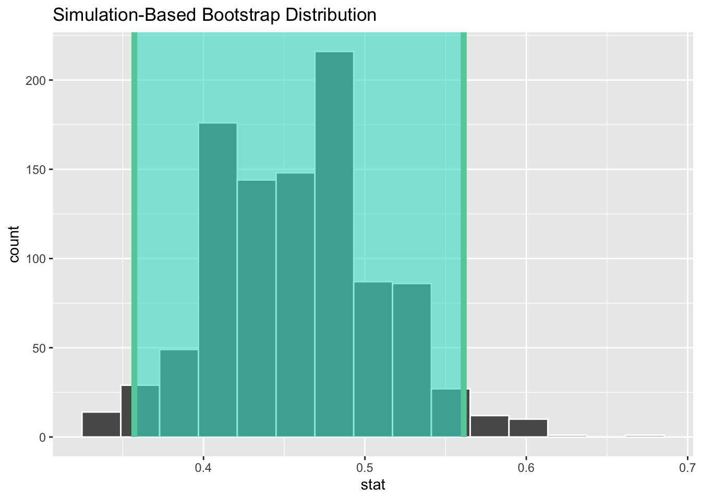

Code
data(duke_forest)In today’s lab, we will start working on statistical inference using the infer package. The infer package aims to simplify and clarify the process of statistical inference by providing an expressive and consistent grammar. The package seamlessly integrates with tidyverse and shifts the focus from memorizing specific statistical tests to understanding the underlying principles of inference.
Infer is centered around four main verbs namely:
specify(): This verb is used to specify the variables of interest and the structure of the data.hypothesize(): This verb is used to declare the null hypothesis.generate(): This verb is used to simulate the null distribution.calculate(): This verb is used to calculate the statistic of interest for each replicate in the simulation.Optionally, you can use the visualize() verb to visualize the null distribution and the observed statistic.
To create your quarto file, follow the following steps:
Go to File>New File > Quarto document. In the title field use Introducing Statistical Inference with Infer then write your name under the Author field. Change the output option to pdf.
Next, save the document as Lab_05. If you did it correctly, the file Lab_05.qmd should appear under the files section with a .qmd extension.
We will need the following packages in today’s lab:
ggplot2 package.Install the infer package then create a code chunk and load the following packages. Be sure to hit the green button to run the packages.
library(openintro)
library(tidyverse)
library(infer)We will need the following data sets: duke_forest contained in the openintro package. To load the data set into R, we use the command below:
data(duke_forest)Before you proceed, examine these data to understand their context. You may run the command ?duke_forest to learn more about the data sets.
Suppose an article claims that 40 percent of homes in Duke Forest have central air conditioning. You are skeptical of this claim and want to use the duke_forest data to investigate this. The data we will use is known as duke_forest.
Before we start, we need to find the observed statistic. The observed statistic is the proportion of homes in Duke Forest with central air conditioning based on the data we have. Notice that the variable is named as cooling in the data and it has two levels (central air, and other). We can find the proportion by counting the cooling variable then dividing the count by the total. See below:
duke_forest %>%
count(cooling) %>%
mutate(prop = n/sum(n))# A tibble: 2 × 3
cooling n prop
<fct> <int> <dbl>
1 other 53 0.541
2 central 45 0.459Here, we see that the proportion of homes with central air conditioning is 0.459.
Question: Based on the observed statistic, what can you say about the claim that the proportion of houses in Duke Forest that have central air cooling is 40%?
To test the claim via a hypothesis test, we have to state the hypotheses first:
Null Hypothesis (\(H_0\)): The proportion of homes in Duke Forest with central air conditioning is 0.4. In symbols, the null hypothesis is \(H_0: p = 0.4\).
Alternative Hypothesis (\(H_A\)): The proportion of homes in Duke Forest with central air conditioning is not 0.4. In symbols, the alternative hypothesis is \(H_A: p \neq 0.4\).
Below are the steps to perform the hypothesis test using infer:
specify: Specify the variables. Be sure to set success to central because that is the level of interest.
hypothesize: The next step is to declare the null hypothesis. In this case, we are testing whether the proportion of homes with central air conditioning is 0.4.
generate: Simulate the null distribution by running. You may think of this step as drawing cards (with replacement) from a deck that has 40% of the cards marked “central”.
calculate: For each replicate from the step above, we compute the proportion of cards that are marked “central”.
visualize (optional): Visualize the null distribution and the observed statistic. Also show the location of the observed statistic on the null distribution.
set.seed(123)
duke_forest %>%
specify(response = cooling, success = "central") %>%
hypothesize(null = "point", p = 0.4) %>%
generate(reps = 1000, type = "draw") %>%
calculate(stat = "prop") %>%
visualize()
We call the above distribution a “null distribution” as it models the null hypothesis. Notice that it is centered around the null value (0.4). We want to answer the question, given this distribution, how likely is it to observe a proportion as extreme as 0.459? To do this we can calculate the percent of data beyond 0.459 (on both sides). This number is the p-value. Before we compute the number, let us visualize the p-value on the null distribution. See below
set.seed(123)
duke_forest %>%
specify(response = cooling, success = "central") %>%
hypothesize(null = "point", p = 0.4) %>%
generate(reps = 1000, type = "draw") %>%
calculate(stat = "prop") %>%
visualize()+
shade_p_value(obs_stat = 0.459, direction = "both")The vertical vertical line shows the location of the observed statistic (0.459) on the null distribution. The shaded regions represent the p-value. The p-value is the probability of observing a proportion as extreme as 0.459 or more extreme, assuming the null hypothesis is true.
To calculate the p-value, we can use the get_p_value() function. The argument obs_stat is used to specify the observed statistic while the direction argument is for specifying whether the test is left/right, or both-sided. In our case, it is both. Note also that we have dropped the visualize() function from the pipeline. See code below:
set.seed(123)
duke_forest %>%
specify(response = cooling, success = "central") %>%
hypothesize(null = "point", p = 0.4) %>%
generate(reps = 1000, type = "draw") %>%
calculate(stat = "prop") %>%
get_p_value(obs_stat = 0.459, direction = "both")# A tibble: 1 × 1
p_value
<dbl>
1 0.266The p-value obtained is fairly large (over 20%). This means that the observed proportion of 0.459 is not unusual assuming that the true proportion of homes with central air conditioning is 0.4. Therefore, the data does not provide enough evidence to reject the claim that the proportion of homes with central heating is different from 0.4.
Notice that in the hypothesis test, our conclusion was that we do not have sufficient evidence to reject the null hypothesis. A natural question that may arise here is, “what is the plausible range of values within which we expect the true proportion to be?” This range of values is known as a confidence interval. We often set a confidence level for each interval (e.g., 95%, 99%). The confidence level represents the proportion of intervals that will contain the true parameter if we were to repeat the sampling process many times.
Top find the confidence interval using infer, we make slight modifications to the pipeline:
specify: This stays the same as for the hypothesis test.
generate: We generate the bootstrap distribution by resampling the data many times. Bootstrap resampling is a method that involves drawing samples with replacement from the original data set. Notice that because we are taking samples from the original sample, we expect the distribution to be centered around the observed statistic which arises from the data.
calculate: We calculate the confidence interval. The conf_int() function is used to calculate the confidence interval. The argument level is used to specify the confidence level. In our case, we will use a 95% confidence level.
get_ci: Finally, we can get the lower and the upper limits of the confidence interval as follows:
set.seed(1234)
duke_forest %>%
specify(response = cooling, success = "central") %>%
generate(reps = 1000, type = "bootstrap") %>%
calculate(stat = "prop", conf_level = 0.95) %>%
get_ci()# A tibble: 1 × 2
lower_ci upper_ci
<dbl> <dbl>
1 0.357 0.561Let us save the above interval as CI. We will need this for visualizing the interval.
set.seed(1234)
CI <- duke_forest %>%
specify(response = cooling, success = "central") %>%
generate(reps = 1000, type = "bootstrap") %>%
calculate(stat = "prop", conf_level = 0.95) %>%
get_ci()visualize() function. See below:set.seed(1234)
duke_forest %>%
specify(response = cooling, success = "central") %>%
generate(reps = 1000, type = "bootstrap") %>%
calculate(stat = "prop", conf_level = 0.95) %>%
visualize() +
shade_confidence_interval(endpoints = CI)
The confidence interval obtained is (0.357, 0.561). This means that we are 95% confident that the true proportion of homes in Duke Forest with central air conditioning is between 0.41 and 0.51. This interval includes the null value of 0.4, which is consistent with our hypothesis test results obtained earlier. Note that these results are based on the data we have and may not be current.
Instructions:
Create a new quarto document and save it as lab_05_Exe. Use the title Introduction to Infer. Write your name under the Author field. Change the output option to pdf.
Delete everything on the page except the YAML. Then, load the packages openintro, infer, and tidyverse. Make sure to use include=FALSE in the code chunk for packages.
Copy and paste each question into the document and have a code chunk below the question if it needs code to answer.
Once you are done, render your document to PDF and submit the pdf on Canvas.
Questions:
(2 pts) There is a data set called age_at_mar contained in the openintro package. The data provides ages at which thousands of women in US got married. Import this data set. Use the mutate function to create a new variable called mar_by_24? that shows whether a woman was married by age 24. The variable should have two levels: Yes and No.
(4 pts) Create a simple bar plot to visualize the distribution of the variable mar_by_24?.
(4 pts) What proportion of women were married by age 24?
(4 pts) An article from 2010 claims that only 35% of women in US get married at or before age 24. The goal is to use the age_at_mar data to test this claim statistically via hypothesis testing. State the null and alternative hypotheses to be tested.
(4 pts) Use the infer workflow to perform the hypothesis test from number 4 above. Be sure to interpret the results in context.
(2 pts) Use the infer workflow to create a 95% confidence interval to estimate the proportion of women that got married by age 24. Interpret the interval in context and state whether it is consistent with the hypothesis test results.